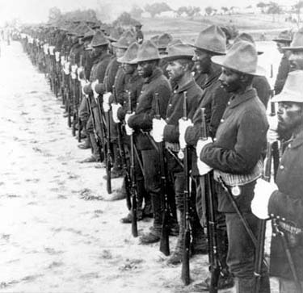
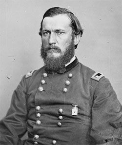

|
With war's end, War Department officials began demobilizing the huge
volunteer army while retaining enough soldiers to occupy the defeated South.
Both the shortage of men in the regular army and the abundance of volunteers,
whom the war's final campaigns had drawn to the various Confederate states,
guaranteed a preponderance of volunteer troops in the occupation army. Thus
necessity and convenience combined to ensure that the defeated South would face
uniformed black, as well as white, victors. That experience would have a lasting
impact on both former masters and former slaves.
Because whites entered the army earlier than blacks, their terms of
enlistment generally expired sooner; demobilization therefore left the postwar
Union army blacker than the wartime forces. At the end of the war, blacks
composed about II percent of the approximately 1,000,000 Union soldiers, but by
the fall of 1865, when the entire army had shrunk to some 227,000 men, blacks
made up roughly 36 percent of the total.' Generally, Southern black soldiers
remained close to where they had enlisted, in areas that had boasted large
antebellum black populations and that had fallen under federal control earliest.
In October 1865, for example, Mississippi and Louisiana hosted more than 27,000
black soldiers between them, and Kentucky and Tennessee accounted for another
22,000. Thus, more than half of the 83,000 black troops in the army at that date
served in those four states. Except for the coastal strip that Union forces had
initially occupied, states like Alabama, Florida, Georgia, and South Carolina
|

Many black soldiers went on to distinguished
careers in the postwar army. Perhaps best known were the
"Buffalo Soldiers," who fought in the Plains Wars and also
in the Spanish-American War.
|
experienced little wartime black recruitment until the Union army spread across
their territory in the closing months of the war. As a result, black troops
constituted only a small portion of postwar federal forces in those states.
Although the War Department retained most Southern black soldiers where they
had enlisted and served, it intervened to send others far afield. For example,
the department moved masses of troops from Virginia to the Rio Grande border of
Texas shortly after the Confederate surrender in the East. These soldiers from
the eastern theater were sent to defeat the Confederate troops west of the
Mississippi, to cut off Jefferson Davis's anticipated escape across the border,
and to counter French-backed Monarchist forces in Mexico. The black 25th Army
Corps, considered too undisciplined and too poorly officered for occupation duty
in Virginia, figured prominently among those troops reassigned. The move
transplanted some 10,000 black soldiers, mostly from Kentucky, Maryland,
Virginia, North Carolina, and the North--to Texas, taking them far (or farther)
from their homes, and leaving Virginia, the state with the largest antebellum
slave population, virtually bereft of black liberators.
Army policies not only concentrated black soldiers in some parts of the South
and removed them entirely from others, but also shaped the composition of the
black occupation force. During the fall of 1865, the War Department determined
to disband all Northern-raised black regiments regardless of the demobilization
orders governing the larger command structures to which they belonged. As a
result, by the end of the year, the army of occupation no longer included those
black soldiers with the longest experience in freedom. Thus the army's patterns
of assignment and discharge influenced both the experience of black soldiers in
the postwar world and their relations with the Southern population, white and
black.
Union occupation forced many Southern whites into daily contact with black
soldiers. In the urban South, blacks often served as provost guards, in effect
policing the cities. On sidewalks and in public houses and buildings, whites met
black soldiers claiming equality if not superiority. Such encounters frequently
produced verbal or physical confrontations which, at times, led to more
widespread disturbances. In the rural South, black soldiers came into contact
with plantation laborers and, with the enthusiasm of former slaves turned
liberators, pressed to eradicate the remnants of slavery. In thousands of ways,
black soldiers communicated to freedmen and freedwomen the meaning of the war,
the role black people played in defeating the Confederacy and destroying
slavery, the new rights liberty allowed, and the new responsibilities it
demanded. While they rarely joined freedpeople in redressing old wrongs and in
evening scores with former masters, black soldiers regularly helped organize and
build schools, churches, and other social institutions in the black communities
where they served. In one Arkansas town, black soldiers even paid for and
constructed a home for black orphans.
Black soldiers also encouraged freedpeople to expand the horizons of freedom
and stood armed and willing to defend from retaliation fellow blacks seeking to
make freedom a reality. "After fighting to get wrights that White men might
Respect by Virtue of the Law," black soldiers would tolerate no abuse of their
people. Because they had seen more of white society than most plantation hands
and had gained familiarity with the workings of the Union army, black soldiers
stood prepared to help former slaves articulate their grievances and direct them
to appropriate authorities. In this regard, the War Department's decision to
disband the Northern black regiments had a profound effect on the freedpeople's
quest for equality under the tutelage of black soldiers: the struggle proceeded
without the self-confident and self-conscious Northern black liberators who
generally had the highest literacy rate and the longest term of service of all
black soldiers and who had taken such prominent part in the struggle for equal
pay and equal treatment in the army.
To the extent that black soldiers relished their role in the army of
occupation, white Southerners loathed it. More than any other postbellum figure,
the black soldier represented the world turned upside down: the subversion of
slavery, the destruction of the Confederacy, and the coming of a new social
order that promised to differ profoundly from the old. At best, whites reacted
to black soldiers with silent contempt; often that contempt found active
manifestation. Some whites struck out at black soldiers, attacking them in the
manner Southern whites traditionally used to deal with violators of their code
of racial etiquette. But disgruntled whites who contemplated violence against
armed blacks courted danger, especially when the intended victims wore the
uniform of the victorious Union army. An assault on a black soldier, even if it
was an immediate success, might bring down upon a community the full force of
federal military power. And if Union authorities often responded slowly, black
soldiers did not take kindly to the abuse of their comrades and frequently
preferred immediate retaliation to dilatory official action.
Unable to intimidate black soldiers, whites charted a different course. They
accused black soldiers of sowing insubordination among their laborers and
fomenting insurrection with extravagant tales of land distribution and
high-flown notions of equality. Viewing the disruption of their labor force as
tantamount to the destruction of Southern society, former masters conjured up
all their deep-seated fears of the horrors of Haiti. They pressed for immediate
removal of black soldiers from the South, especially those attached to
Freedmen's Bureau offices who assisted bureau agents in adjudicating labor
disputes and investigating blacks' complaints of mistreatment.
Southern white protesters found support among some Union commanders who
believed that the presence of black troops undermined labor discipline and
jeopardized harmonious relations between former masters and former slaves. Such
army officers kept tight rein on their black troops, limiting them to their
posts and warning them of their responsibilities as Union soldiers. Some even
recommended the removal of black units from areas of pronounced white
opposition. In Virginia, for example, General Henry W. Halleck, commanding at
Richmond after the Confederate defeat, ordered all black troops into a camp for
instruction to overcome an alleged lack of discipline that he felt ill fitted
them for occupation duty. At bottom, Halleck sought to forestall their
potentially disquieting effect on Virginia's black labor force during the
rapidly ending planting season. Within weeks he proposed their reassignment to
Texas, thus removing approximately 20,000 perceived troublemakers from Virginia.
Most officers, including General Godfrey Weitzel, commander of the 25th Army
Corps, defended the performance of their men, commending their discipline and
restraint under trying circumstances. While the presence of black soldiers
undoubtedly emboldened freedpeople to press their newly won rights to the full
extent, army inspectors generally acknowledged the good behavior of black
troops. Still, Southern whites found enough sympathetic ears to hasten the
|

Godfrey Weitzel
|
demobilization of most black regiments and to remove blacks in the army of
occupation far away from disruptive contact with freedpeople and embarrassing
contact with whites. As a result, by October 1866 only 12,985 men and officers
of black volunteer regiments remained in service, and by October 1867 not a
single black volunteer still served.7
The record that black soldiers compiled during the Civil War ensured them,
however, a place in the peacetime regular army. The congressional act of July
1866 reorganizing the regular army provided for two black cavalry regiments and
four black infantry regiments. s Recruited to a large extent from among Civil
War veterans, these regiments played a prominent, if ironic, role in subduing
the Indian peoples of the West and, at the end of the century, defeating the
Philippine insurrectionists. In the long run, the regiments continued to bear
witness to the fighting capabilities of black soldiers, which Civil War service
had established beyond doubt, just as they testified to the persistence of race
segregation and inequality even after the destruction of slavery. They served
both as symbol of past injustice and hope of future equality.
In the short run, black soldiers in the postwar army heightened awareness
among both blacks and whites of the meaning of emancipation and the black
soldiers' role in hastening it. Freedpeople continued to look to black troops as
a source of inspiration, protection, and direction as they made their way in the
new world of freedom. Southern whites likewise continued to see black soldiers
as symbols of Southern defeat and sources of resistance in their attempts to
restore the old order. As symbols of both liberation for blacks and humiliation
to whites, black soldiers would play a central role in the reconstruction of
Southern life.
Source: Freedmen and Southern Society Project, Freedom, A
Documentary History of Emancipation, 1861-1867 (New York: Cambridge
University Press, 1985), 731-740.
|